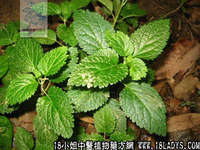

血见愁(中药材植物名:山霍香)(植物科目:唇形科)

植物名：山霍香。
生长环境：本品为草本。栽培或少数逸为野生。
分布：亚洲热带地区。
入药部分：全草。
采集期：夏季。
自采地点：郊野、山岗。
性味：性凉、味平淡。
功能：散瘀、止血、凉血。
主治、用量和用法：1、劳伤、苦伤、咳血：干用5钱至两半，清水煎服；2、撞红：鲜用2两至4两，擂烂取汁，炖1小时服；3、跌打肿痛：配伍用；4、刀伤：干用为末，撒在伤患处。
验方：（治跌打肿痛方）血见愁1两、透骨消1两、九层塔5钱、黑心羌5钱，晒干为末，用酒调匀，加热敷患处。内服每次1～2钱，冲白酒服。
（方解）本方血见愁凉血散瘀，透骨消除骨骼瘀痛，九层塔辛温通脉，黑心羌祛风行气。合为活血、通脉、祛瘀、消肿之剂。
（方歌）跌打肿疼血见愁，透骨黑羌九塔求，开酒调敷冲酒服，活血祛风瘀不留。
参考资料：《广东省中医经验交流汇编》介绍：治心气剧方：用血见愁、 五指毛桃、青漆三味之根各适量，清水服。又治呕吐血方：血见愁根、五指毛桃根，适量，煮猪瘦肉服。
《广州市中医验方选集第一集》南区卫生科介绍刀伤出血方：血见愁晒干为末，出血时敷之，立即止血。
本文解释权归中药大全，本文地址：https://www.daquan.com/post/1524.html